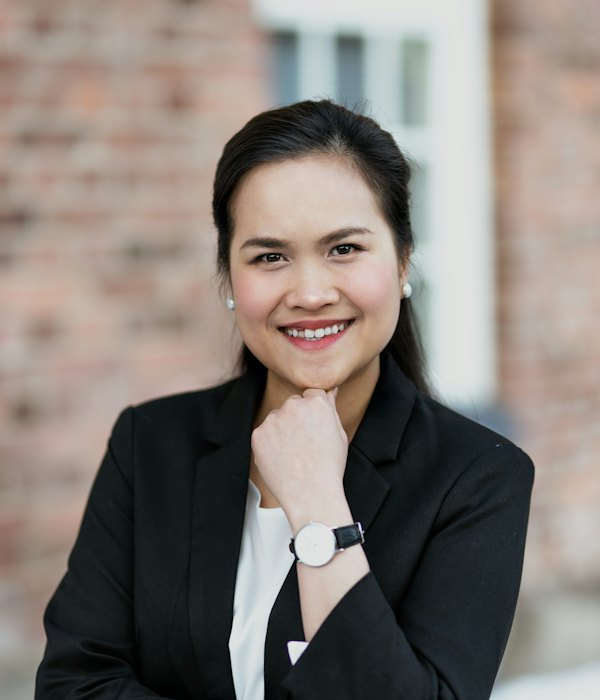
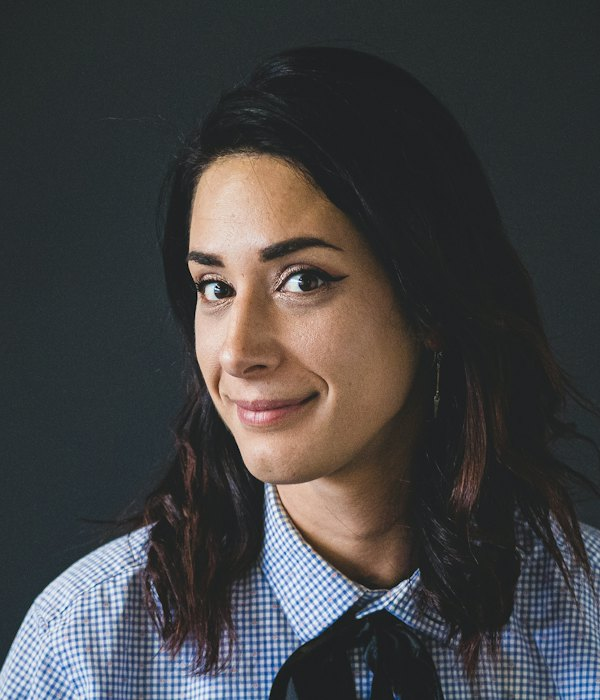
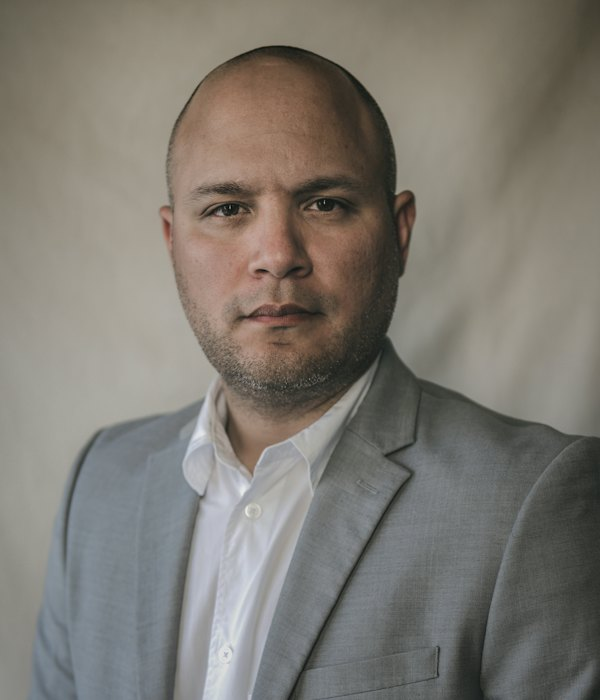
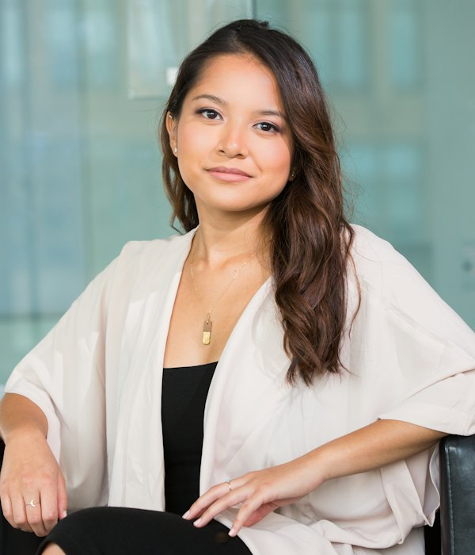
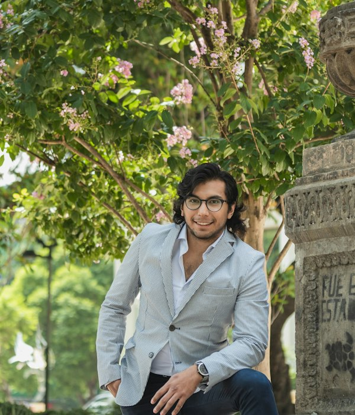
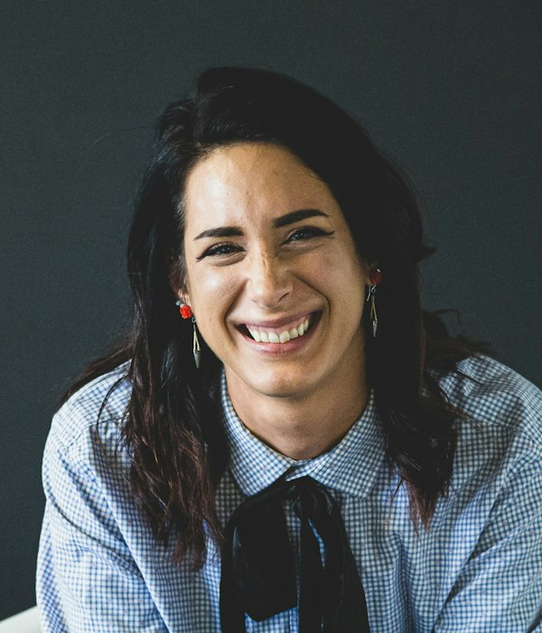

Cada persona es una pieza. Juntas, un mosaico.

01 Propósito
Como el mosaico de nuestro logo, creemos que cada persona que ayudamos, cada voluntaria y cada aliado suman color a una misma causa: que nadie enfrente sola lo que puede enfrentarse acompañada.
Estar presentes
Brindar apoyo, acompañamiento y oportunidades a mujeres, niñas, niños y familias en situación de vulnerabilidad en Piura.
Ser referente del norte
Ser la fundación referente del norte del Perú en asistencia social cercana, transparente y con impacto medible.
02 Valores
Cinco palabras que se cumplen.
Empatía
Escuchamos antes de proponer. Cada historia es distinta.
Dignidad
Ayudar nunca significa decidir por la otra persona.
Transparencia
Rendimos cuentas de cada sol y de cada acción.
Compromiso
Acompañamos hasta que la familia pueda caminar sola.
Sororidad
Entre mujeres nos sostenemos y nos abrimos camino.
03 Mensaje de la presidenta
Creamos Atenea porque vimos de cerca a mujeres y familias enfrentando solas la enfermedad y la violencia. Nuestro compromiso es simple: estar presentes, actuar con seriedad y rendir cuentas de cada sol que se nos confía.María Fernanda Castillo · Presidenta del Consejo de Administración (nombre ilustrativo)
04 Equipo
Las personas detrás de Atenea.
Un equipo multidisciplinario acompañado por un Consejo de Administración y una red de voluntariado. Nombres y fotografías ilustrativos.

María Fernanda Castillo
PresidentaAbogada con 15 años de experiencia en derechos de la mujer y gestión social.

Lucía Ramírez Vega
Directora de ProgramasGestora social especializada en proyectos de salud comunitaria.

Carlos Mendoza Ruiz
Asesor legalAbogado colegiado en Piura, especialista en derecho de familia.

Andrea Flores Saavedra
PsicólogaPsicóloga clínica con experiencia en atención a víctimas de violencia.

Diego Chávez Ortiz
VoluntariadoArticula la red de voluntarios universitarios y profesionales.

Valeria Núñez Paz
ComunicacionesPeriodista a cargo de la difusión y la relación con aliados.
05 Cómo trabajamos
Serio, cercano y medible.
Institucionalidad
Constitución por escritura pública, inscripción en SUNARP y en el registro del Consejo de Supervigilancia de Fundaciones.
Aliados y voluntariado
Universidades, profesionales, empresas e instituciones de Piura.
Campañas en territorio
Salud, ayuda humanitaria y orientación gratuita en las ocho provincias.
Rendición de cuentas
Resultados, personas atendidas y estados financieros publicados en esta web.
06 Agenda 2030